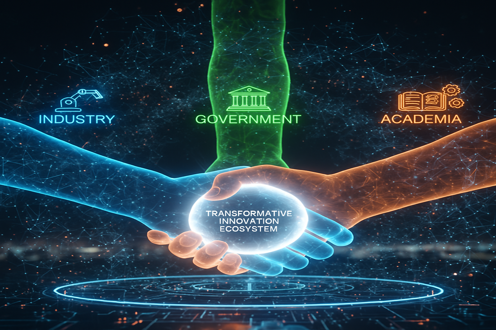
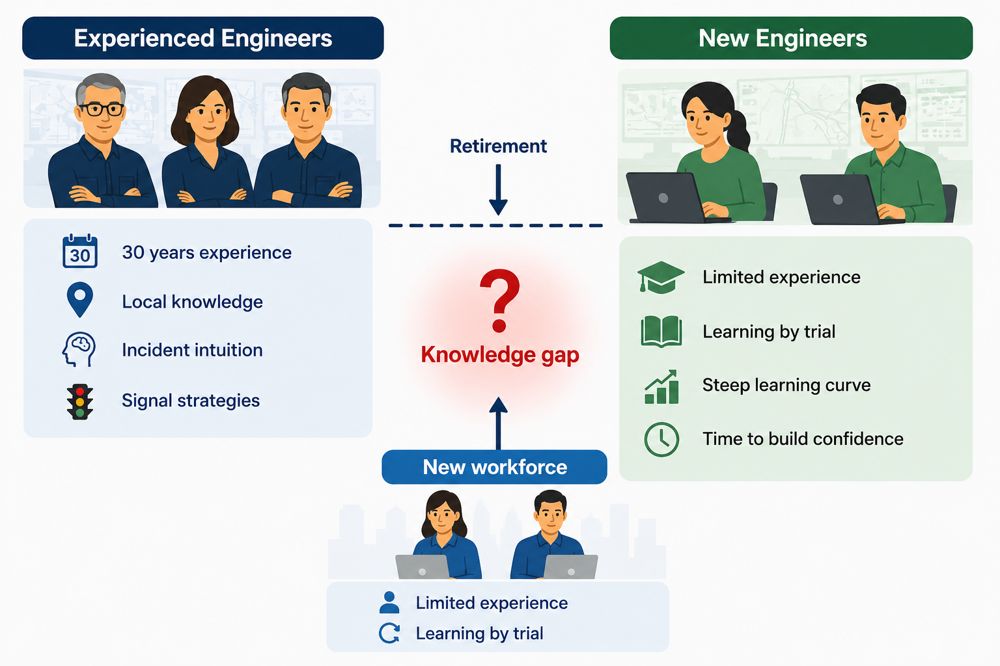

A standing home for transport intelligence, not a one-off project.
Government, industry, and academia working on the same problems, where research and operations advance together rather than apart.
The problems NiFTi is built to solve.
Transport networks in Australia operate with significant capability gaps that no single organisation has the mandate or resources to close alone.
Silos at every boundary
Road and public transport planning run as separate streams. Motorways and arterials operate on disconnected control systems. Instabilities propagate across boundaries no one is responsible for.
Expertise walking out the door
Decades of network-specific knowledge sit in the heads of experienced operators. There is no scalable way to transfer it. As the workforce turns over, the network's institutional memory is lost.
Research that stays on the shelf
The transport research community produces strong work. Operations teams rarely have the capacity to adopt it. The gap between publication and deployment is wide, slow, and costly to cross one project at a time.
Vision and mission.
To make Australia's transport networks among the most intelligent and responsive in the world, where research and operations advance together rather than apart.
The bridge between transport research and live network operations, building the data, algorithms, and decision support that let operators run a network that is smarter at every step, for the public who depend on it.
The network does not operate alone.
Transport is one node in a web of interacting systems. Much of the signal that predicts the network's behaviour originates outside it: in the weather, in major events, in the energy grid, in telecommunications, in adjacent networks.
NiFTi builds the data, models, and decision support that read those signals, so the network is run with the whole picture in view rather than a fragmented one.
Click any node to see how it connects
How the hub is designed to work.
Multi-agency by design
Government, industry, and academia at the same table on shared priorities, co-defining the work rather than receiving it. No single agency can own the network's intelligence layer. NiFTi is the shared infrastructure.
A talent pipeline
PhDs, MPhils, and industry-embedded researchers solving operational problems with operational data. The workforce of the next decade, trained on real problems with real partners from day one.
Emerging frontiers
Preparing the network for what is next: agentic AI decision support, new sensing modalities, V2X integration, and the coupled-systems intelligence that Brisbane 2032 will demand.
Government, industry, and academia at the same table.
NiFTi is not a university project handed to government. It is co-owned from day one. Each partner brings what only they can: operators bring real problems and real data; industry brings deployment infrastructure; academia brings research depth and the talent pipeline.
This is the structure that makes research stick in operations.
Partner with us →
Decades of expertise walking out the door.
Experienced traffic operators carry 30 years of local knowledge: which corridors behave unexpectedly, which signal strategies work at 7am on a Monday, how to read a queue forming two kilometres back. There is currently no scalable way to transfer it.
InteliAgent transforms tacit operator expertise into a retrievable digital knowledge asset, so a junior engineer can ask a complex question and get back an experienced answer, grounded in data and institutional memory.
See the operating model →